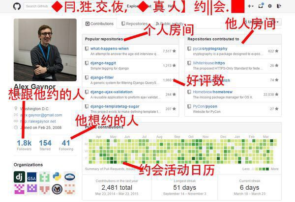

by Archrjoe @ cncn.com
08-11 掌通科技
参与完成日企外包前端页面功能，PC端+功能手机网页制作
11-13 4399游家网络
负责动漫、早教、儿歌频道前端搭建；参与完成充值中心前端开发
13-14 舜亚科技
负责完成乾坤车城前端搭建，PC+mobile双平台
快速
有效
兼容性
H5+CSS3
开发思路的向上对接，避免新技术运用之后有陌生感Animate
高效的页面用户体验交互，就依靠animate了简洁可读性高的代码
简称 优雅去jQuery化
摆脱jquery的思维方式，尽量不依赖JQ而去组织代码优化
JS逻辑层面的优化 HTML页面渲染原理的理解 提高代码的高内聚性，降低耦合自动化
Grunt和gulp类似的前端辅助工具的使用 目的：提高开发便捷性，工欲善其事必先利其器分离
前后端分离 目的：减少交叉，实现封闭角色开发，更独立的工作模式架构
从零开始布局，减少开发后期的返工量。减少开发内部的迭代次数，节省更多成本产品意识
更有团队参与感，提升自己的产品意识的一种很好的方式视觉设计
打通上游环节，前端和UI是最紧密的一组关系交互
所有的交互设计师、其实是更理论化的产品（行为方式研究）数据
了解我们的后端同事的工作模式，目的是为了更好的和他们配合起来让他们更舒适交流/协同工作
发展的眼光看前端全球最大交友网站GITHUB
 欢迎大家来找我搞基，单独开房，切磋技艺：github.com/archrjoe